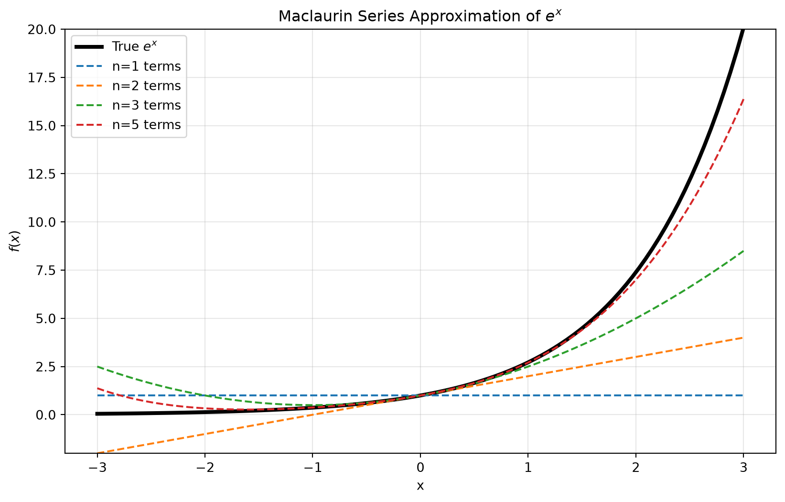

import numpy as np
import matplotlib.pyplot as plt
import math
x_vals = np.linspace(-3, 3, 100)
y_true = np.exp(x_vals)
plt.figure(figsize=(10, 6))
plt.plot(x_vals, y_true, 'k-', linewidth=3, label="True $e^x$")
# Calculate Taylor approximations
for n in [1, 2, 3, 5]:
y_approx = np.zeros_like(x_vals)
for i in range(n):
y_approx += (x_vals**i) / math.factorial(i)
plt.plot(x_vals, y_approx, '--', label=f"n={n} terms")
plt.title("Maclaurin Series Approximation of $e^x$")
plt.xlabel("x")
plt.ylabel("$f(x)$")
plt.ylim(-2, 20)
plt.grid(True, alpha=0.3)
plt.legend()
plt.show()